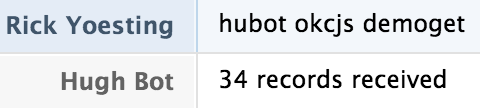

Hubot Scripts:
How to train your robot
An OKC.js lightning talk
August 19, 2014
A backyard.js talk
July 26, 2014 - Canceled, the mystery lives on
An OKC.js lightning talk
May 20, 2014 - Canceled due to strep!
Meet Our Hero

- Created to automate chat
- Runs on Node!
- Many chat adapters available
Why Hubot?
Use #1 - Entertainment!
mustache me
hubot mustache me Rick Yoesting
pug bomb
hubot pug bomb 3
So, Why Hubot?
Use #2 - "Real Work"!
"Real Work" Examples
Integrate with issue tracker
Deploy/rollback software
Alter BGP routing to mitigate DDoS attack*
* ChatOps: Augmented Reality for Ops by Mark Imbriaco
Benefits
Transparency
Repeatable
The tools are where you're already working
Training is "free"
CoffeeScript
Love it or hate it, you can't avoid it!
Hubot is written in CoffeeScript
Most Hubot scripts are in CoffeeScript
At a minimum, you will read CoffeeScript
Regular Expressions
Love 'em or hate 'em, you can't avoid 'em!
Install Hubot
- Install node.js and npm*
- Install hubot and coffee-script modules globally
> [sudo] npm install -g hubot coffee-script
Create your robot
-
> hubot -c my-bot
> cd my-bot
my-bot > npm install -
my-bot > bin/hubot
Hubot > hubot ping
Hubot > PONG
Now you've got a Hubot using the default Shell adapter.
Name your robot
Name your Hubot with --name.
-
my-bot > bin/hubot --name okcjs-bot
okcjs-bot > hubot ping
okcjs-bot > hubot ping
okcjs-bot > hubot ping
Notice that Hubot doesn't respond unless called byname. -
okcjs-bot > okcjs-bot ping
okcjs-bot > PONG
Make your robot a chat bot
Because Hubot is better with friends!
Let's wire up to HipChat!
> [sudo] npm install --save hubot-hipchat
Configure HipChat adapter
Set some envionment variables...
export HUBOT_HIPCHAT_JID="123456_987654@chat.hipchat.com"
export HUBOT_HIPCHAT_PASSWORD="password"
export HUBOT_HIPCHAT_ROOMS="123456_demo@conf.hipchat.com"
Run Hubot
Start up Hubot with HipChat adapter...
my-bot > sudo bin/hubot --adapter hipchat
Starting Hubot...
[...date...] INFO Connecting HipChat adapter...
[...date...] INFO Connected to hipchat.com as @hubot
[...date...] INFO Joining 123456_demo@conf.hipchat.com
So you don't use/like HipChat...
Plenty of other adapters to choose from! *
- Flowdock
- IRC
- Partychat
- Talker
- Twilio
- XMPP
- Gtalk
- Yammer
- Skype
- Jabbr
- iMessage
- Hall
- ChatWork
- AIM
- Slack
- Lingr
* https://github.com/github/hubot/blob/master/docs/adapters.md
Installing Hubot Scripts
- npm module
hubot-scriptsinstalled by default- Edit
hubot-scripts.jsonto register the script you want to use
- Edit
- Install external scripts via npm modules
- Edit
external-scripts.jsonto register the script
- Edit
- Place scripts in
my-bot/scripts
What can Hubot do?
robot.respond- respond to message sent to Hubot (by name)robot.hear- "hear" messages in chatroom
What else can Hubot do?
robot.http- Make HTTP GET/POST requestsrobot.router*- Accept HTTP GET/POST requests
*robot.router is an instance of an express application
Now We're Ready to Begin
- Pre-requisites installed
- Know how/where to install Hubot scripts
- Have some idea of what we can do with Hubot
Anatomy of a Hubot script
Export as a node.js module.
You must export as a function, not an object!
module.exports = (robot) ->
robot.respond /someCmd/i, (msg) ->
# msg is a Hubot Response object
# send message when a user types "hubot someCmd"
msg.send 'Do you even RegEx?'robot.respond
React when command is sent directly to hubot by name!
module.exports = (robot) ->
robot.respond /okcjs/i, (msg) ->
msg.send 'Yay! Lightning Talks!'msg.random
Use msg.random to avoid sending same message each time.
greetings = [
'Yay! Lightning Talks!'
'Yay! OKC.js!'
'The 1st rule of OKC.js is you must talk about OKC.js!'
]
module.exports = (robot) ->
robot.respond /okcjs/i, (msg) ->
msg.send msg.random greetingsmsg.random results
msg.match
Use msg.match to get your regex on!
help = [
'hubot okcjs - send thoughtful message about OKC.js and/or Lightning Talks'
'hubot okcjs help - send this list of help'
]
module.exports = (robot) ->
robot.respond /okcjs(\s*)?(help)?/i, (msg) ->
cmd = msg.match[2] or null
unless cmd?
msg.send msg.random greetings
return
msg.send help.join '\n'msg.match results
robot.hear
React on a regex match hubot is "listening" to!
module.exports = (robot) ->
robot.hear /thunder plains/i, (msg) ->
msg.send 'Get all the deets on Thunder Plains:' +
' http://thunderplainsconf.com/'robot.hear results
msg.reply
When you want to "@" reply the sender.
module.exports = (robot) ->
robot.hear /thunder plains/i, (msg) ->
msg.send 'Get all the deets on Thunder Plains:' +
' http://thunderplainsconf.com/'
msg.reply 'You should ask about the after party.'msg.reply results
msg.emote
emote is not supported by all adapters.
module.exports = (robot) ->
robot.hear /want to attend Backyard.js/i, (msg) ->
msg.emote 'sends Backyard.js tix'msg.emote results

require your own scripts
okcjs-demo.coffee
greetings = require './okcjs-demo-greetings'
module.exports = (robot) ->
robot.respond /okcjs/i, (msg) ->
msg.send msg.random greetings()okcjs-demo.greetings.coffee
greetings = [
"Yay! Lightning Talks!"
"The 1st rule of OKC.js is you must talk about OKC.js!"
"Yay! OKC.js!"
"Woot! OKC.js!"
]
module.exports = ->
return greetingsrobot.http.get
Make simple HTTP GET to receive JSON data.
demoGetUrl = 'https://api.canary.io/checks/https-github.com/measurements'
module.exports = (robot) ->
robot.respond /okcjs(\s*)?(\S*)?/i, (msg) ->
cmd = msg.match[2] or null
if 'demoget'.localeCompare(cmd) is 0
robot.http(demoGetUrl)
.get() (err, res, body) ->
msg.send JSON.parse(body).length + " records received"
else if 'help'.localeCompare(cmd) is 0
msg.send help.join '\n'
else
msg.send msg.random greetings
robot.router.get
Receive external HTTP GET request. Env var PORT must be set.
querystring = require 'querystring'
module.exports = (robot) ->
robot.router.get '/hubot/okcjs', (req, res) ->
q = querystring.parse req._parsedUrl.query
user = {}
user.type = 'groupchat'
user.room = q.room or '109614_playground@conf.hipchat.com'
robot.send user, q.msg
res.end "GET: received '#{q.msg}'"robot.router.get results
Love your users!
- Add documentation to header of your script
- Add your own
helpcommand
Documentation Example
Follow the TomDoc* conventions and Hubot automagically adds your commands to hubot help output.
# Description:
# A simple demo script to show off Hubot
#
# Dependencies:
# none
#
# Commands:
# hubot okcjs - send thoughtful message about OKC.js and/or Lightning Talks
# hubot okcjs demoget - return info about simple HTTP GET request
# thunder plains - send Thunder Plains info
# want to attend Backyard.js - emote Backyard.js tix
# hubot okcjs help - send this list of help
#
# URLS:
# GET /hubot/okcjs?msg=<msg>[&room=<room>]
#
# Notes:
# Presented at OKC.js Lightning Talks on Aug 19, 2014
#
# Author:
# ryoehubot help madness

help command example
Show the specific sub-set of commands in your script.
help = [
'hubot okcjs - send thoughtful message about OKC.js and/or Lightning Talks'
'thunder plains - send Thunder Plains info'
'want to attend Backyard.js - emote Backyard.js tix'
'hubot okcjs help - send this list of help'
]
module.exports = (robot) ->
robot.respond /okcjs(\s*)?(help)?/i, (msg) ->
cmd = msg.match[2] || null
unless cmd?
msg.send msg.random greetings
return
msg.send help.join '\n'okcjs help command output
More things can Hubot do. Maybe.
robot.brain- in memory key-value storerobot.emit*- emit an eventrobot.on*- listen for an emitted an eventrobot.topic**- room topic changesrobot.enter**- a user enters the roomrobot.leave**- a user leaves the room
* from Node.js EventEmitter
** Adapter support will vary. But look very shenanigans friendly!
Thank You!
Hubot Scripts: How to train your robot
An OKC.js lightning talk
Comments or Questions?
@ryoe_ok on Twitter
ryoe on GitHub